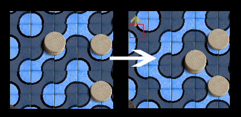
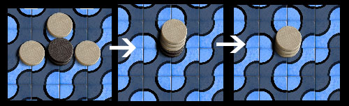
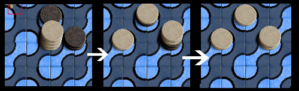

A move can consist of up to three parts.
- You may
Flip
a tile, rotate it so colors all match, and replace it back
on the playing area.. This has the effect of reconfiguring
the pattern of rivers and islands on the board. The tile
that is flipped must not be encumbered by any chips on any of it's
corners.
- You may
Move
a stack of your color anywhere it can slide freely on within it's
current colored region of the board. You must move the entire
stack, and all the spaces you move through or to must be unoccupied.
- You may
Split
the moved stack (or if no stack was moved, any
stack of your color) into two or more smaller stacks on adjacent
spaces. No chips can be left behind at the original space,
and no chips of your color can be on any of the destination
spaces. If a destination space contains an opposing stack,
you must place at least as many chips, and you will capture opposing
stack.
- or if you do not split, You may Merge the moved
stack, (or if no stack was moved, any stack) and one or more
additional stacks into a central square between them. The
entire stacks must be merged. The central square must not
contain a stack of your color, and if it contains an opposing stack,
you must place at least as many chips on top and capture
them. The final height after capturing must be 4 or less.
- you Must
either
move, split, or join as part of your move. If you do not do
any of these, you lose.
The summary is:
- You have to move, split or join something.
- Capture stacks that are the same height or shorter by
merging or splitting onto them.
- Moving and splitting operations are complete - you
can't make a stack taller by merging or splitting other chips onto it,
or make it shorter by merging or splitting from it.
- At the end of a move, all the stacks are uniform in
color, and 4 chips high or less.
|

white flips a tile and moves a stack

light merges 3
stacks and captures 2 dark

light splits 4 into 3 stacks and captures 3
|